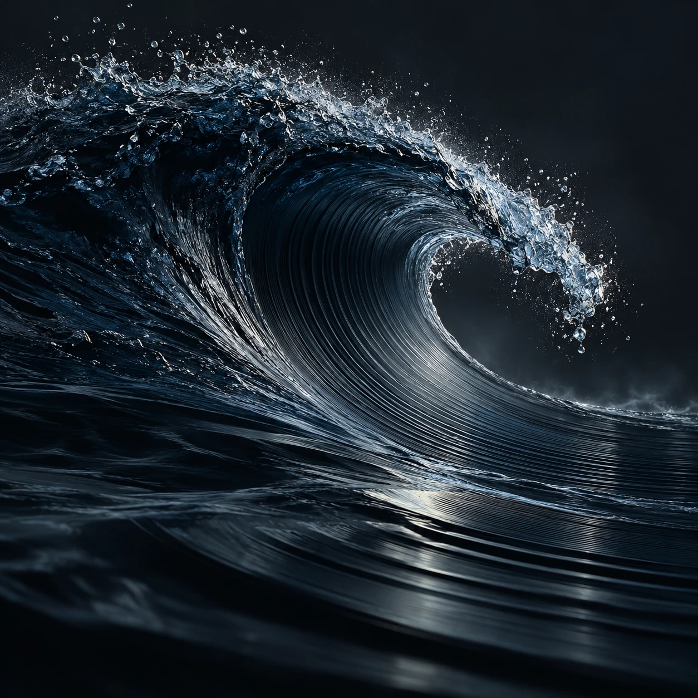

WELLENSOHN / ARTWORK 001
Was weiterklingt.
· Bild & Gedanke

Eine Welle lässt sich für einen Augenblick als Form erkennen. Dann verändert sie sich. Musik gibt solchen Augenblicken eine hörbare Gestalt.
Ein Stück endet, doch manchmal beschäftigt uns eine einzelne Stelle noch lange. Wir erinnern uns an einen Menschen, einen Ort oder daran, wie wir selbst einmal waren. Beim nächsten Hören fällt uns etwas anderes auf. Die Aufnahme ist dieselbe geblieben. Wir haben uns verändert.
Dieses Bild hält Bewegung fest. Was darin weiterklingt, bringt jeder selbst mit.
WellenSohn.